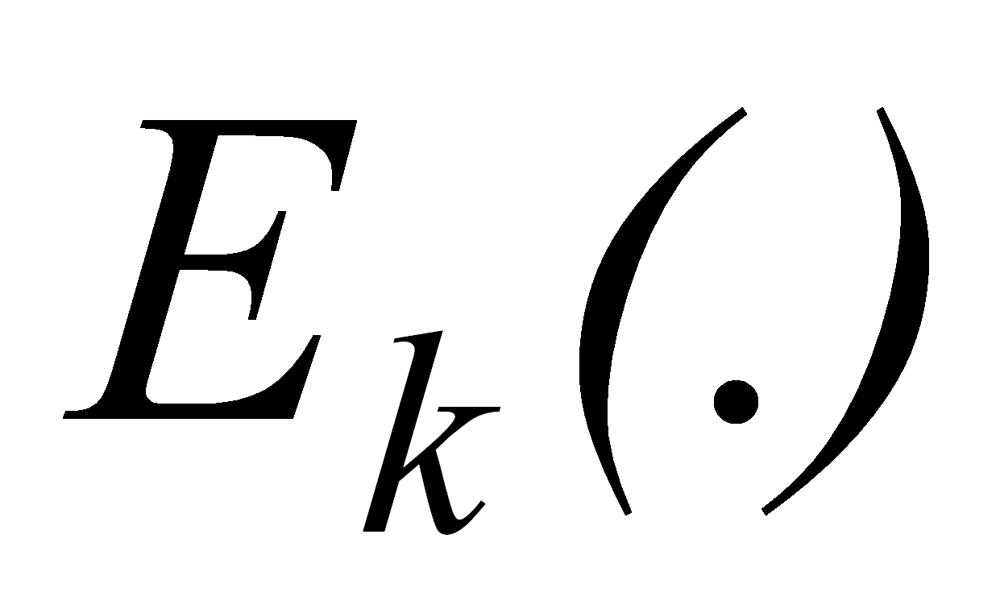

Протоколы аутентификации, основанные на использовании однонаправленных ключевых хэш-функций
Протоколы, представленные выше, могут быть модифицированы путем замены симметричного шифрования на шифрование с помощью односторонней ключевой хэш-функции. Это бывает необходимо, если алгоритмы блочного шифрования недоступны или не отвечают предъявляемым требованиям (например, в случае экспортных ограничений).
Своеобразие шифрования с помощью односторонней хэш-функции заключается в том, что оно, по существу, является односторонним, то есть не сопровождается обратным преобразованием – расшифрованием на приемной стороне. Обе стороны (отправитель и получатель) используют одну и ту же процедуру одностороннего шифрования.
Односторонняя хэш-функция hK (.) с параметром-ключом К, примененная к шифруемым данным М, дает в результате хэш-значение m (дайджест), состоящее из фиксированного небольшого числа байтов (рис. 4.4).
Рис. 4.3. Применение для аутентификации односторонней хэш-функции с параметром-ключом
Дайджест
 передается получателю вместе с исходным сообщением М.
Получатель сообщения, зная, какая односторонняя хэш-функция была
применена для получения дайджеста, заново вычисляет ее, используя
сообщение М.
Если значения полученного дайджеста m
и вычисленного дайджеста m'
совпадают, значит, содержимое сообщения М
не было подвергнуто никаким изменениям.
передается получателю вместе с исходным сообщением М.
Получатель сообщения, зная, какая односторонняя хэш-функция была
применена для получения дайджеста, заново вычисляет ее, используя
сообщение М.
Если значения полученного дайджеста m
и вычисленного дайджеста m'
совпадают, значит, содержимое сообщения М
не было подвергнуто никаким изменениям.
Знание дайджеста не дает возможности восстановить исходное сообщение, но позволяет проверить целостность данных. Дайджест представляет собой криптографически стойкую контрольную сумму для исходного сообщения. Следовательно, между дайджестом и обычной контрольной суммой имеется существенное различие. Контрольную сумму используют как средство проверки целостности передаваемых сообщений по ненадежным линиям связи. Это средство проверки не рассчитано на борьбу со злоумышленниками, которым в такой ситуации ничто не мешает подменить сообщение, добавив к нему новое значение контрольной суммы. Получатель в таком случае не заметит никакой подмены.
В отличие от обычной контрольной суммы, при вычислении дайджеста применяются секретные ключи. В случае, если для получения дайджеста используется односторонняя хэш-функция с параметром-ключом К, который известен только отправителю и получателю, любая модификация исходного сообщения будет немедленно обнаружена.
При использовании для аутентификации односторонних функций шифрования в рассмотренные выше протоколы необходимо внести следующие изменения:
функция симметричного шифрования  заменяется функцией ;
проверяющий, вместо установления факта совпадения значений в полях в расшифрованных сообщениях с предполагаемыми значениями, вычисляет значение однонаправленной функции и сравнивает его с полученным от другого участника обмена информацией;
для обеспечения возможности независимого вычисления значения однонаправленной функции получателем сообщения в протоколе 1 метка времени должна передаваться дополнительно в открытом виде, а в сообщении (2) протокола 3 случайное число должно передаваться дополнительно в открытом виде.
Модифицированный вариант протокола 3 с учетом сформулированных изменений имеет следующую структуру:
 (1)
(1)
 (2)
(2)
 (3)
(3)
Заметим, что в третье сообщение протокола включено поле А. Результирующий протокол обеспечивает взаимную аутентификацию и известен как протокол SKID 3.